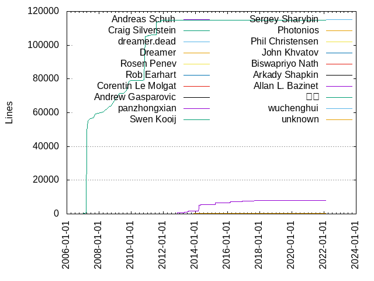
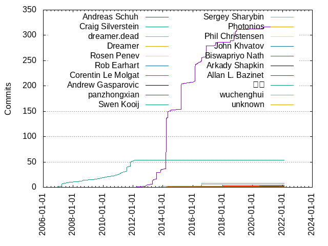

Authors
| Author | Commits (%) | + lines | - lines | First commit | Last commit | Age | Active days | # by commits |
|---|
| Andreas Schuh | 317 (69.21%) | 8106 | 53868 | 2012-05-29 | 2020-09-18 | 3034 days, 1:36:20 | 67 | 1 |
| Craig Silverstein | 54 (11.79%) | 114948 | 59808 | 2006-12-18 | 2012-02-02 | 1872 days, 3:40:06 | 37 | 2 |
| dreamer.dead | 8 (1.75%) | 142 | 88 | 2016-07-18 | 2016-08-01 | 13 days, 22:01:29 | 4 | 3 |
| Dreamer | 6 (1.31%) | 70 | 10 | 2016-08-01 | 2016-08-03 | 1 day, 15:24:20 | 3 | 4 |
| Rosen Penev | 3 (0.66%) | 17 | 17 | 2019-09-16 | 2019-10-31 | 45 days, 2:01:57 | 2 | 5 |
| Rob Earhart | 3 (0.66%) | 155 | 12 | 2016-02-18 | 2018-01-06 | 688 days, 3:15:48 | 3 | 6 |
| Corentin Le Molgat | 3 (0.66%) | 37 | 27 | 2018-01-29 | 2018-01-31 | 1 day, 23:32:51 | 2 | 7 |
| Andrew Gasparovic | 3 (0.66%) | 18 | 24 | 2020-04-06 | 2020-06-15 | 69 days, 18:15:48 | 3 | 8 |
| panzhongxian | 2 (0.44%) | 3 | 3 | 2020-09-23 | 2020-09-23 | 2:39:54 | 1 | 9 |
| Swen Kooij | 2 (0.44%) | 4 | 4 | 2013-11-27 | 2013-11-27 | 0:00:26 | 1 | 10 |
| Sergey Sharybin | 2 (0.44%) | 8 | 5 | 2015-12-31 | 2015-12-31 | 0:06:27 | 1 | 11 |
| Photonios | 2 (0.44%) | 178 | 2 | 2013-11-22 | 2013-11-22 | 0:01:33 | 1 | 12 |
| Phil Christensen | 2 (0.44%) | 1 | 1 | 2018-11-30 | 2018-11-30 | 0:01:32 | 1 | 13 |
| John Khvatov | 2 (0.44%) | 5 | 5 | 2014-04-30 | 2014-04-30 | 2:13:50 | 1 | 14 |
| Biswapriyo Nath | 2 (0.44%) | 3 | 3 | 2022-01-03 | 2022-01-15 | 12 days, 6:30:58 | 2 | 15 |
| Arkady Shapkin | 2 (0.44%) | 15 | 7 | 2017-05-05 | 2017-05-11 | 5 days, 12:00:55 | 2 | 16 |
| Allan L. Bazinet | 2 (0.44%) | 81 | 18 | 2016-04-05 | 2016-04-05 | 0:06:36 | 1 | 17 |
| 田欧 | 1 (0.22%) | 1 | 0 | 2016-08-30 | 2016-08-30 | 0:00:00 | 1 | 18 |
| wuchenghui | 1 (0.22%) | 6 | 1 | 2018-05-11 | 2018-05-11 | 0:00:00 | 1 | 19 |
| unknown | 1 (0.22%) | 459 | 459 | 2014-03-19 | 2014-03-19 | 0:00:00 | 1 | 20 |
These didn't make it to the top: shawke, randomguy3, liuchang0812, kokerf, grdowns, drillsar, Zachary, Yi Wang, Trevor Hickey, Tom Lundell, Todd Lipcon, Sumit Gupta, Silver Chan, Siddhartha Bagaria, Sam Liu, Sam Clegg, Razvan Musaloiu-E, Mmanu Chaturvedi, Mizux, Ming Zhao, Michael Chinen, Matt Hargett, Kjell Schubert, Joseph Shanak, Jason Juang, Jacky Wu, Ilya Lavrenov, HongboLiu, Geoffrey Lalonde, FARBOS Arnaud, Evan Klitzke, Dominic Hamon, David Lam, Dani Perez, Dan Minor, Changqing Li, Ben Vanik, Arnaud Farbos, Andreas Franek, Aaryaman Sagar
Only top 20 authors shown
Only top 20 authors shown
| Month | Author | Commits (%) | Next top 5 | Number of authors |
|---|
| 2022-02 | Joseph Shanak | 1 (100.00% of 1) | | 1 |
| 2022-01 | Biswapriyo Nath | 2 (66.67% of 3) | Michael Chinen | 2 |
| 2021-07 | HongboLiu | 1 (100.00% of 1) | | 1 |
| 2020-10 | Changqing Li | 1 (100.00% of 1) | | 1 |
| 2020-09 | Andreas Schuh | 4 (66.67% of 6) | panzhongxian | 2 |
| 2020-08 | Zachary | 1 (100.00% of 1) | | 1 |
| 2020-06 | Tom Lundell | 1 (50.00% of 2) | Andrew Gasparovic | 2 |
| 2020-05 | Andrew Gasparovic | 1 (100.00% of 1) | | 1 |
| 2020-04 | Andrew Gasparovic | 1 (100.00% of 1) | | 1 |
| 2020-03 | Ilya Lavrenov | 1 (100.00% of 1) | | 1 |
| 2020-01 | Trevor Hickey | 1 (100.00% of 1) | | 1 |
| 2019-11 | Jacky Wu | 1 (100.00% of 1) | | 1 |
| 2019-10 | Rosen Penev | 2 (100.00% of 2) | | 1 |
| 2019-09 | grdowns | 1 (25.00% of 4) | Rosen Penev, Mizux, Andreas Schuh | 4 |
| 2019-01 | Andreas Schuh | 1 (100.00% of 1) | | 1 |
| 2018-12 | Andreas Schuh | 2 (100.00% of 2) | | 1 |
| 2018-11 | Andreas Schuh | 11 (84.62% of 13) | Phil Christensen | 2 |
| 2018-10 | Andreas Schuh | 2 (100.00% of 2) | | 1 |
| 2018-09 | Andreas Schuh | 7 (87.50% of 8) | Matt Hargett | 2 |
| 2018-07 | Andreas Schuh | 3 (75.00% of 4) | Sam Liu | 2 |
| 2018-05 | wuchenghui | 1 (100.00% of 1) | | 1 |
| 2018-03 | kokerf | 1 (100.00% of 1) | | 1 |
| 2018-01 | Corentin Le Molgat | 3 (60.00% of 5) | Rob Earhart | 2 |
| 2017-11 | Silver Chan | 1 (100.00% of 1) | | 1 |
| 2017-10 | Sumit Gupta | 1 (100.00% of 1) | | 1 |
| 2017-08 | Yi Wang | 1 (33.33% of 3) | Siddhartha Bagaria, Andreas Schuh | 3 |
| 2017-07 | Andreas Schuh | 6 (75.00% of 8) | drillsar, Jason Juang | 3 |
| 2017-05 | Arkady Shapkin | 2 (50.00% of 4) | randomguy3, Mmanu Chaturvedi | 3 |
| 2017-04 | Ben Vanik | 1 (100.00% of 1) | | 1 |
| 2017-03 | Dan Minor | 1 (100.00% of 1) | | 1 |
| 2017-01 | Geoffrey Lalonde | 1 (100.00% of 1) | | 1 |
| 2016-12 | Razvan Musaloiu-E | 1 (100.00% of 1) | | 1 |
| 2016-11 | Andreas Schuh | 22 (100.00% of 22) | | 1 |
| 2016-10 | Todd Lipcon | 1 (50.00% of 2) | David Lam | 2 |
| 2016-09 | Andreas Schuh | 1 (100.00% of 1) | | 1 |
| 2016-08 | Dreamer | 6 (33.33% of 18) | Andreas Schuh, dreamer.dead, 田欧, Aaryaman Sagar | 5 |
| 2016-07 | dreamer.dead | 4 (66.67% of 6) | Andreas Schuh | 2 |
| 2016-06 | Andreas Schuh | 2 (66.67% of 3) | liuchang0812 | 2 |
| 2016-05 | Ming Zhao | 1 (50.00% of 2) | Andreas Schuh | 2 |
| 2016-04 | Andreas Schuh | 2 (40.00% of 5) | Allan L. Bazinet, FARBOS Arnaud | 3 |
| 2016-03 | Andreas Schuh | 20 (100.00% of 20) | | 1 |
| 2016-02 | Andreas Schuh | 15 (88.24% of 17) | Rob Earhart, Evan Klitzke | 3 |
| 2016-01 | Sam Clegg | 1 (50.00% of 2) | Andreas Schuh | 2 |
| 2015-12 | Sergey Sharybin | 2 (100.00% of 2) | | 1 |
| 2015-11 | Arnaud Farbos | 1 (100.00% of 1) | | 1 |
| 2015-10 | Andreas Schuh | 2 (100.00% of 2) | | 1 |
| 2015-05 | Kjell Schubert | 1 (50.00% of 2) | Andreas Schuh | 2 |
| 2015-04 | Andreas Schuh | 1 (100.00% of 1) | | 1 |
| 2015-03 | Andreas Schuh | 50 (100.00% of 50) | | 1 |
| 2014-07 | Andreas Schuh | 3 (100.00% of 3) | | 1 |
| 2014-05 | Andreas Schuh | 12 (100.00% of 12) | | 1 |
| 2014-04 | John Khvatov | 2 (40.00% of 5) | Andreas Schuh, shawke | 3 |
| 2014-03 | Andreas Schuh | 101 (98.06% of 103) | unknown, Andreas Franek | 3 |
| 2013-11 | Andreas Schuh | 6 (60.00% of 10) | Swen Kooij, Photonios | 3 |
| 2013-10 | Dani Perez | 1 (100.00% of 1) | | 1 |
| 2013-09 | Dominic Hamon | 1 (100.00% of 1) | | 1 |
| 2013-07 | Andreas Schuh | 14 (100.00% of 14) | | 1 |
| 2013-05 | Andreas Schuh | 2 (100.00% of 2) | | 1 |
| 2013-04 | Andreas Schuh | 8 (100.00% of 8) | | 1 |
| 2013-01 | Andreas Schuh | 1 (100.00% of 1) | | 1 |
| 2012-11 | Andreas Schuh | 3 (100.00% of 3) | | 1 |
| 2012-05 | Andreas Schuh | 1 (100.00% of 1) | | 1 |
| 2012-02 | Craig Silverstein | 1 (100.00% of 1) | | 1 |
| 2012-01 | Craig Silverstein | 1 (100.00% of 1) | | 1 |
| 2011-12 | Craig Silverstein | 1 (100.00% of 1) | | 1 |
| 2011-11 | Craig Silverstein | 11 (100.00% of 11) | | 1 |
| 2011-08 | Craig Silverstein | 3 (100.00% of 3) | | 1 |
| 2011-07 | Craig Silverstein | 7 (100.00% of 7) | | 1 |
| 2011-05 | Craig Silverstein | 1 (100.00% of 1) | | 1 |
| 2011-04 | Craig Silverstein | 1 (100.00% of 1) | | 1 |
| 2011-03 | Craig Silverstein | 2 (100.00% of 2) | | 1 |
| 2011-01 | Craig Silverstein | 2 (100.00% of 2) | | 1 |
| 2010-11 | Craig Silverstein | 1 (100.00% of 1) | | 1 |
| 2010-10 | Craig Silverstein | 1 (100.00% of 1) | | 1 |
| 2010-09 | Craig Silverstein | 1 (100.00% of 1) | | 1 |
| 2010-05 | Craig Silverstein | 1 (100.00% of 1) | | 1 |
| 2010-03 | Craig Silverstein | 1 (100.00% of 1) | | 1 |
| 2010-01 | Craig Silverstein | 1 (100.00% of 1) | | 1 |
| 2009-11 | Craig Silverstein | 1 (100.00% of 1) | | 1 |
| 2009-09 | Craig Silverstein | 1 (100.00% of 1) | | 1 |
| 2009-07 | Craig Silverstein | 1 (100.00% of 1) | | 1 |
| 2009-04 | Craig Silverstein | 1 (100.00% of 1) | | 1 |
| 2008-09 | Craig Silverstein | 1 (100.00% of 1) | | 1 |
| 2008-08 | Craig Silverstein | 1 (100.00% of 1) | | 1 |
| 2008-07 | Craig Silverstein | 1 (100.00% of 1) | | 1 |
| 2008-03 | Craig Silverstein | 1 (100.00% of 1) | | 1 |
| 2007-10 | Craig Silverstein | 1 (100.00% of 1) | | 1 |
| 2007-08 | Craig Silverstein | 1 (100.00% of 1) | | 1 |
| 2007-06 | Craig Silverstein | 1 (100.00% of 1) | | 1 |
| 2007-04 | Craig Silverstein | 1 (100.00% of 1) | | 1 |
| 2007-03 | Craig Silverstein | 5 (100.00% of 5) | | 1 |
| 2006-12 | Craig Silverstein | 1 (100.00% of 1) | | 1 |
| Year | Author | Commits (%) | Next top 5 | Number of authors |
|---|
| 2022 | Biswapriyo Nath | 2 (50.00% of 4) | Michael Chinen, Joseph Shanak | 3 |
| 2021 | HongboLiu | 1 (100.00% of 1) | | 1 |
| 2020 | Andreas Schuh | 4 (28.57% of 14) | Andrew Gasparovic, panzhongxian, Zachary, Trevor Hickey, Tom Lundell | 8 |
| 2019 | Rosen Penev | 3 (37.50% of 8) | Andreas Schuh, grdowns, Mizux, Jacky Wu | 5 |
| 2018 | Andreas Schuh | 25 (69.44% of 36) | Corentin Le Molgat, Rob Earhart, Phil Christensen, wuchenghui, kokerf | 8 |
| 2017 | Andreas Schuh | 7 (35.00% of 20) | Arkady Shapkin, randomguy3, drillsar, Yi Wang, Sumit Gupta | 13 |
| 2016 | Andreas Schuh | 72 (72.73% of 99) | dreamer.dead, Dreamer, Allan L. Bazinet, 田欧, liuchang0812 | 15 |
| 2015 | Andreas Schuh | 54 (93.10% of 58) | Sergey Sharybin, Kjell Schubert, Arnaud Farbos | 4 |
| 2014 | Andreas Schuh | 118 (95.93% of 123) | John Khvatov, unknown, shawke, Andreas Franek | 5 |
| 2013 | Andreas Schuh | 31 (83.78% of 37) | Swen Kooij, Photonios, Dominic Hamon, Dani Perez | 5 |
| 2012 | Andreas Schuh | 4 (66.67% of 6) | Craig Silverstein | 2 |
| 2011 | Craig Silverstein | 28 (100.00% of 28) | | 1 |
| 2010 | Craig Silverstein | 6 (100.00% of 6) | | 1 |
| 2009 | Craig Silverstein | 4 (100.00% of 4) | | 1 |
| 2008 | Craig Silverstein | 4 (100.00% of 4) | | 1 |
| 2007 | Craig Silverstein | 9 (100.00% of 9) | | 1 |
| 2006 | Craig Silverstein | 1 (100.00% of 1) | | 1 |
| Domains | Total (%) |
|---|
| gmail.com | 351 (76.64%) |
|---|
| google.com | 64 (13.97%) |
|---|
| heartflow.com | 8 (1.75%) |
|---|
| users.noreply.github.com | 6 (1.31%) |
|---|
| outlook.com | 4 (0.87%) |
|---|
| vertex.ai | 2 (0.44%) |
|---|
| microsoft.com | 2 (0.44%) |
|---|
| fedoraproject.org | 2 (0.44%) |
|---|
| yahoo.com | 1 (0.22%) |
|---|
| xiaomi.com | 1 (0.22%) |
|---|